Séance 8 - La solidification des magmas I : roches plutoniques
Plan du cours
| Temps indicatif | Partie | Objectif |
|---|---|---|
| 0–40 min | Formation des roches plutoniques et construction des croûtes terrestres | Comprendre la nucléation et la croissance cristalline, ainsi que l’évolution chimique et minéralogique associée |
| 40–45 min | Questions générales | |
| 45–60 min | Pause | |
| 60–100 min | Application aux roches réelles | Relier les processus magmatiques aux roches observées |
| 100–105 min | Questions générales |
Roche plutonique et subvolcanique
Comment distinguer les roches plutoniques des autres produits magmatiques et retracer leur formation ?
Un magma peut cristalliser en profondeur ou atteindre la surface et y refroidir. Cette séance porte sur les roches plutoniques : leur refroidissement généralement lent permet aux cristaux de croître jusqu’à devenir visibles à l’œil nu, ce qui produit une texture grenue. Le terme intrusif désigne plus largement un magma mis en place et solidifié sous la surface ; il inclut aussi les intrusions peu profondes.
Roches subvolcaniques (cf. séance 9) : elles se forment dans des intrusions peu profondes, souvent des dykes ou des sills, qui peuvent alimenter des réservoirs ou des éruptions. Leur refroidissement et leur texture sont intermédiaires entre ceux des roches plutoniques et volcaniques : elles sont souvent microgrenues ou porphyriques, parfois microlitiques.
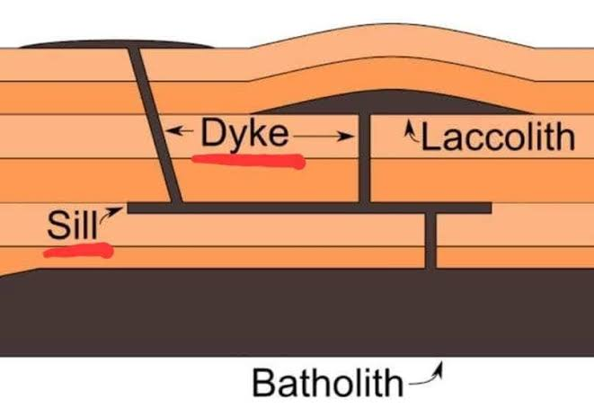
Mécanisme de formation des cristaux
Nucléation
Des atomes ou des ions s’assemblent dans le liquide pour former un germe cristallin stable. Le nombre de germes formés contribue à déterminer le nombre de cristaux qui pourront ensuite se développer.
Croissance
Les cristaux grandissent par ajout d’atomes ou d’ions à leur surface, depuis le liquide. Un faible nombre de germes et une croissance prolongée produit de grands cristaux, comme dans les roches plutoniques. La taille finale dépend aussi du temps disponible pour la croissance.
Sous-refroidissement
Le sous-refroidissement est l’écart entre la température du liquidus et celle du magma. Il fournit une force motrice à la cristallisation et influence les vitesses de nucléation et de croissance, donc le nombre et la taille des cristaux.
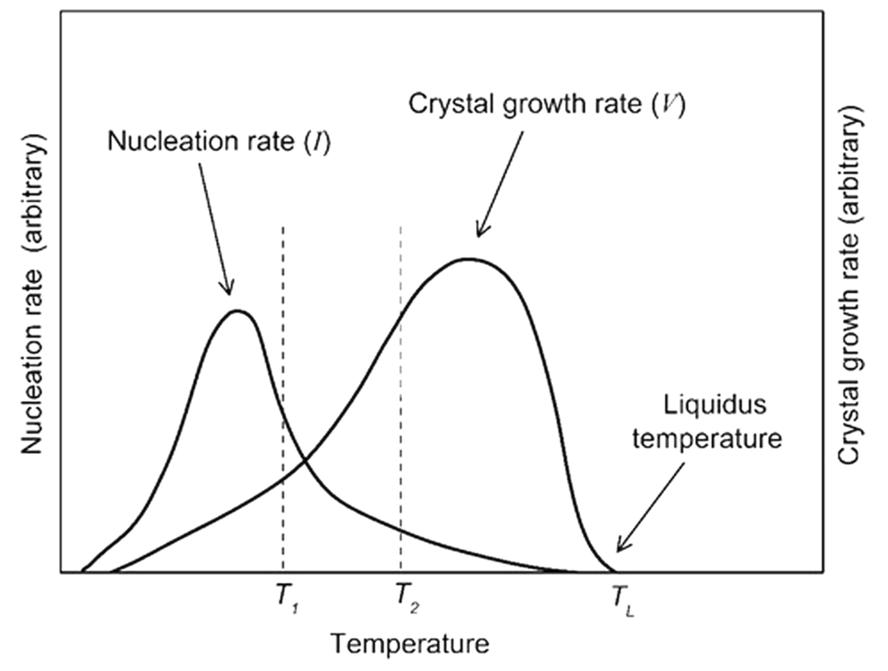
Nucléation homogène et hétérogène
Nucléation homogène
Un germe cristallin apparaît spontanément au sein du liquide, sans surface préexistante. Il faut créer toute l’interface entre le germe et le liquide : le coût énergétique est élevé. Cette nucléation demande généralement un sous-refroidissement important.
Nucléation hétérogène
Un germe se forme sur une surface déjà présente : cristal, impureté, ou paroi de l’encaissant. Une partie de l’interface coûteuse est ainsi évitée, ce qui facilite la nucléation et réduit le sous-refroidissement nécessaire.
Interprétation thermodynamique simple
Former un germe coûte de l’énergie, car une interface entre le cristal et le liquide doit être créée. En revanche, la cristallisation sous le liquidus est favorable dans le volume du magma.
En dessous d’une taille critique, le germe est instable et tend à se dissoudre. Au-delà de cette taille, il peut croître.
Une surface préexistante réduit l’énergie nécessaire à la formation du germe : la barrière de nucléation et le sous-refroidissement requis sont plus faibles.
Dans les magmas, des cristaux et d’autres surfaces déjà présents peuvent favoriser la nucléation hétérogène. La nucléation homogène reste possible, notamment lorsque le sous-refroidissement est important. Le mécanisme dépend aussi de la composition et de l’histoire thermique du magma.
Exemple de deux populations de cristaux dans une roche magmatique
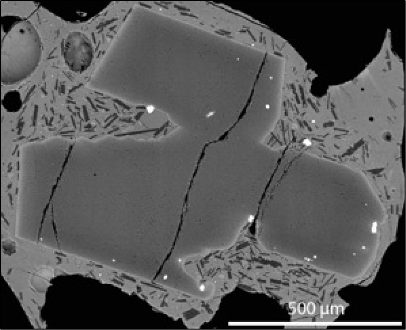
Rappel sur la cristallisation à l’équilibre et la cristallisation fractionnée
À l’équilibre, les cristaux restent en contact avec le liquide et peuvent échanger de la matière avec lui. Leur composition peut ainsi évoluer lorsque la température et la composition du liquide changent.
Lors d’une cristallisation fractionnée, les cristaux sont séparés du liquide ou isolés de ses échanges. Le liquide résiduel change alors de composition et peut former d’autres assemblages minéralogiques et d’autres roches.
Dans la nature, ces deux modèles sont des pôles idéalisés. Les systèmes évoluent souvent par étapes, avec séparation incomplète des cristaux, recharge et mélange des magmas.
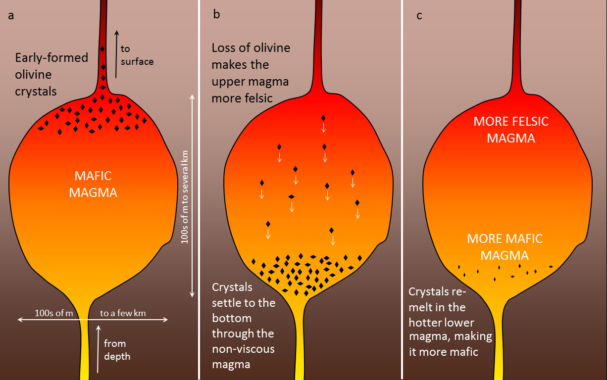
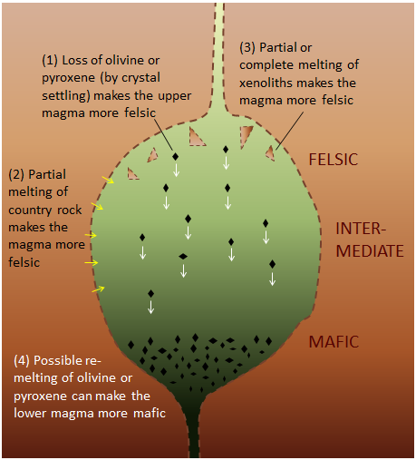
La composition chimique des magmas évolue au cours de leur cristallisation
La série réactionnelle de Bowen : un modèle général
Pour les magmas subalcalins, la série de Bowen schématise deux branches : une branche discontinue (olivine, pyroxènes, amphibole, biotite) et une branche continue où les plagioclases évoluent généralement de compositions calciques vers des compositions sodiques.
Quand les cristaux sont séparés du liquide, le liquide résiduel change de composition. Il s’enrichit souvent en Si, Na et K et évolue vers des compositions plus felsiques. Le Fe par exemple ne suit pas une tendance unique : dans certaines séries tholéiitiques, sa concentration augmente d’abord dans le liquide, puis diminue lorsque des oxydes de fer et de titane cristallisent.
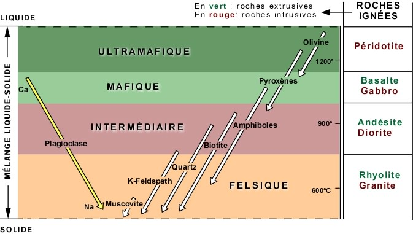
La série de Bowen est un modèle général, et non un ordre universel. La composition initiale, la pression, la teneur en eau, l’état d’oxydation et le devenir des cristaux influencent la séquence réelle.
Olivine
Solution solide Fe–Mg
L’olivine a pour formule générale (Mg,Fe)₂SiO₄. Sa composition varie entre deux pôles : la forstérite, riche en magnésium (Fo), et la fayalite, riche en fer (Fa).
Fo indique la proportion molaire du pôle forstérite. Dans de nombreux magmas mafiques, les olivines précoces sont plus riches en Mg ; celles qui cristallisent ensuite peuvent être plus riches en Fe, à mesure que le liquide évolue.

Diagramme de composition de l’olivine
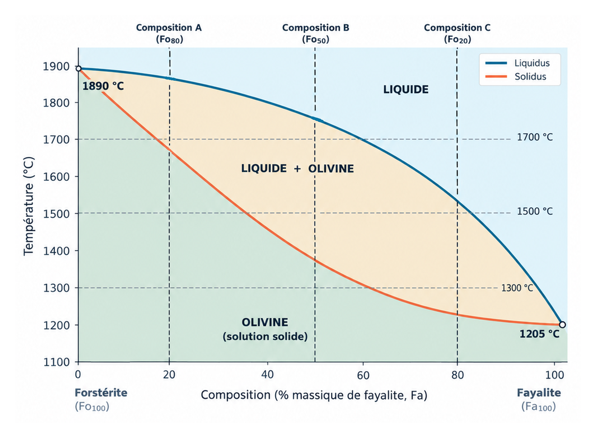
Pyroxènes
Une famille de silicates à compositions variables
Les pyroxènes sont des silicates en chaînes simples. Leur formule générale est XY(Si,Al)₂O₆ ; X et Y sont des sites cationiques occupés principalement par Ca, Mg et Fe.
- Les orthopyroxènes forment principalement une série entre l’enstatite, riche en Mg, et la ferrosilite, riche en Fe.
- Les clinopyroxènes incorporent davantage de Ca ; leurs compositions sont notamment représentées par les composantes diopside (Mg) et hédenbergite (Fe).
La composition des pyroxènes dépend du magma et des conditions de cristallisation ; elle peut donc enregistrer l’évolution du liquide.
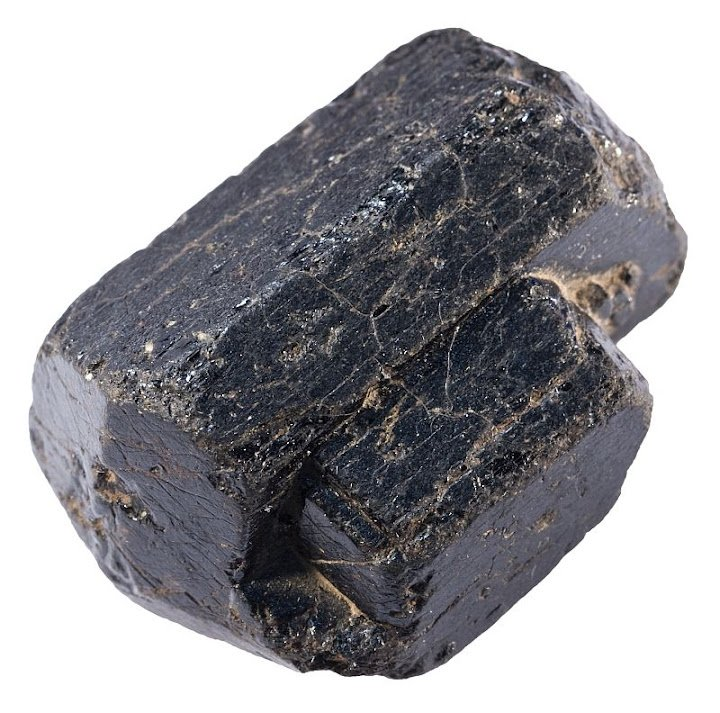
Diagramme de composition des pyroxènes
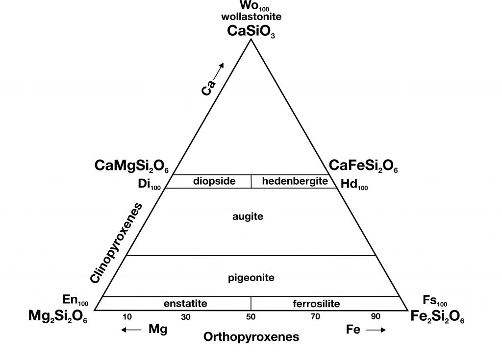
Amphiboles
Des silicates hydratés
Les amphiboles sont des silicates en chaînes doubles qui contiennent généralement des groupes hydroxyle (OH), parfois remplacés par F ou Cl. Leur composition varie notamment en Mg, Fe, Ca, Na et Al.
Exemple : la magnesio-hornblende a pour formule idéale Ca₂(Mg₄Al)(Si₇Al)O₂₂(OH)₂.
Dans les roches magmatiques, les amphiboles sont fréquentes dans les magmas riches en eau. Leur stabilité dépend aussi de la pression, de la température et de la composition du magma ; elles peuvent se déstabiliser si ces conditions changent.
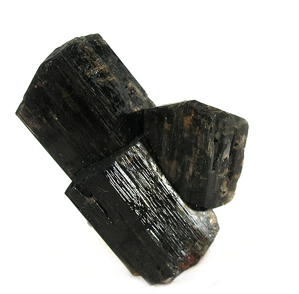
Diagramme de composition des amphiboles
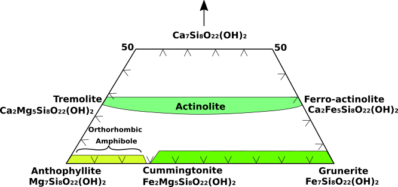
Biotite
Un mica riche en fer et en magnésium
La biotite est un phyllosilicate potassique hydraté, de formule simplifiée K(Mg,Fe)₃AlSi₃O₁₀(OH)₂. Le rapport Fe/Mg varie d’un cristal à l’autre et selon le magma.
Elle se rencontre dans de nombreuses roches plutoniques, notamment les granitoïdes. Sa présence et sa composition dépendent de la composition du magma et des conditions de cristallisation.

Composition des micas : biotite
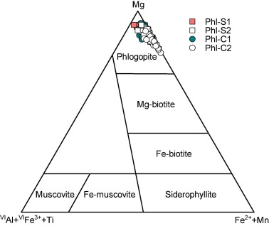
Quartz
Un minéral de composition presque fixe
Le quartz est constitué de dioxyde de silicium (SiO₂) et ne forme pas de solution solide importante dans les magmas courants.
Dans les roches magmatiques, le quartz primaire apparaît dans des liquides saturés ou sursaturés en silice. Il cristallise souvent parmi les phases tardives des granitoïdes, avec les feldspaths.

Feldspath potassique
Le pôle potassique des feldspaths alcalins
Le feldspath potassique a pour pôle idéal KAlSi₃O₈. Les feldspaths alcalins peuvent aussi incorporer du Na ; leur composition varie donc entre des pôles potassique et sodique.
L’orthose et la microcline sont des feldspaths potassiques fréquents dans les roches plutoniques. Au refroidissement.
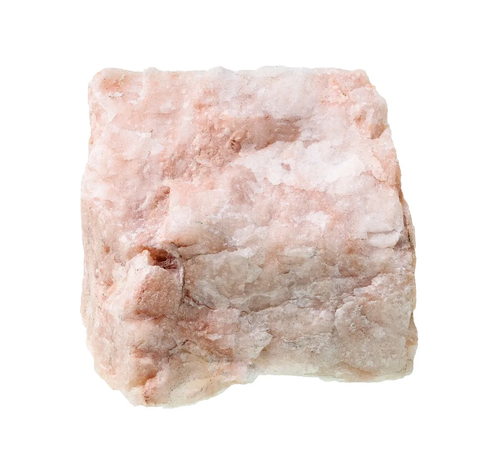
Diagramme de composition des feldspaths
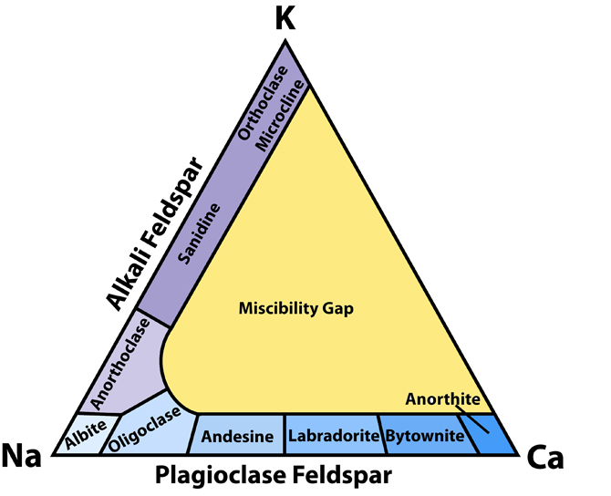
Muscovite
Un mica potassique riche en aluminium
La muscovite a pour formule idéale KAl₂(AlSi₃O₁₀)(OH)₂. Comme la biotite, c’est un phyllosilicate hydraté, mais elle est généralement claire et plus riche en Al.
Elle peut cristalliser dans certains granites peralumineux, notamment à un stade tardif. Elle peut aussi se former plus tard par altération hydrothermale ou métamorphique ; les textures et ses relations avec les autres minéraux aident à distinguer ces origines.
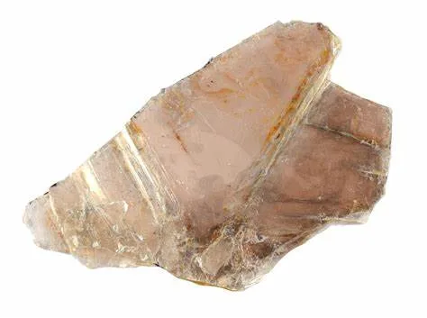
Composition des micas : muscovite
Plagioclases
Solution solide albite–anorthite
Les plagioclases forment une série continue entre l’albite, riche en sodium (NaAlSi₃O₈), et l’anorthite, riche en calcium (CaAl₂Si₂O₈). An indique la proportion molaire du pôle anorthite. La composition des plagioclases peut varier dans un cristal, ce qui produit des zonations visibles en lame mince.
Dans une évolution magmatique fréquente, les plagioclases précoces sont plus calciques et les compositions tardives plus sodiques. Les zonations d’un cristal peuvent enregistrer les changements de composition du liquide ou des conditions de cristallisation.
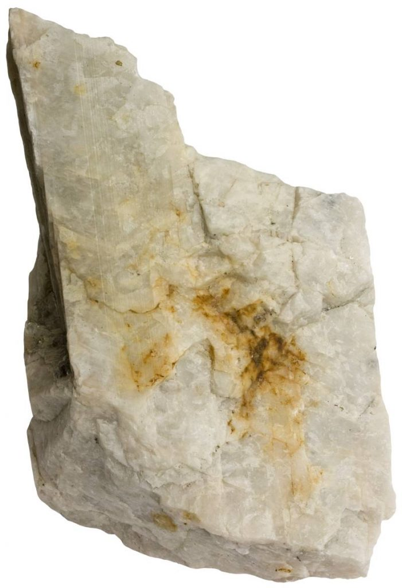
Diagramme de composition des plagioclases
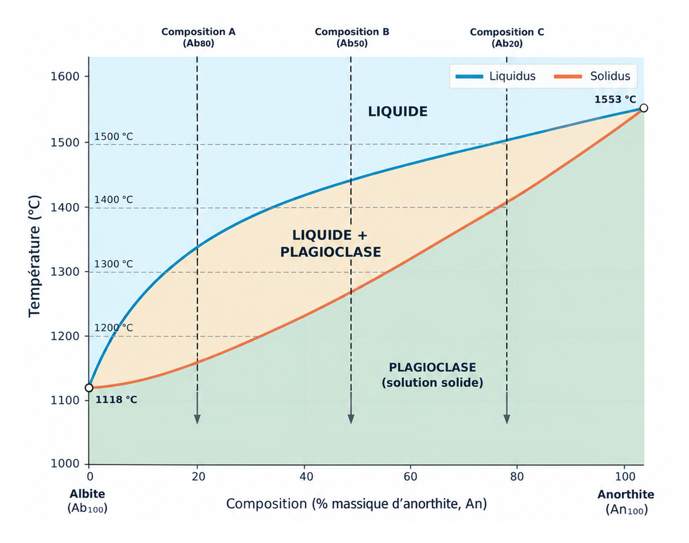
Les roches plutoniques des croûtes océaniques et continentales
Croûte océanique
Formée principalement aux dorsales, elle est relativement mince et surtout basaltique et gabbroïque. Les gabbros cristallisent en profondeur dans les systèmes magmatiques des dorsales, tandis que les dykes et les laves occupent les niveaux supérieurs.
Croûte continentale
Variable en épaisseur et en composition, elle rassemble des roches magmatiques, sédimentaires et métamorphiques. Ses roches plutoniques couvrent une large gamme, des gabbros aux granitoïdes. Les granitoïdes sont fréquents dans de nombreux terrains continentaux, surtout dans la croûte supérieure.
Construire la croûte océanique à une dorsale
Aux dorsales, la remontée du manteau et la décompression produisent des magmas basaltiques. Une partie atteint le fond océanique et forme des laves ; une autre cristallise en profondeur et forme des roches plutoniques, principalement des gabbros.
La croûte océanique est souvent décrite par une succession simplifiée de laves, de dykes et de gabbros. Cette architecture varie selon la vitesse d’expansion et l’alimentation magmatique (cf. séance 10)
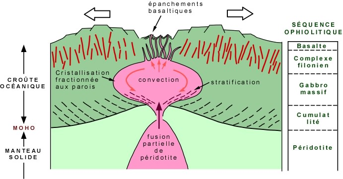
La croûte continentale : une histoire complexe
La croûte continentale se forme principalement dans les zones de subduction. Cependant, les mécanismes sont multiples. Elle peut croître et se transformer par :
- extraction de magmas depuis le manteau ;
- cristallisation et différenciation de magmas ;
- fusion partielle de roches crustales ;
- accrétion de terrains et épaississement tectonique ;
- recyclage ou érosion d’une croûte plus ancienne.
Les plutons enregistrent une partie de cette histoire sous forme de compositions, d’âges, de contacts et de structures variés.
La croûte continentale n’est pas uniquement granitique
Les granitoïdes sont fréquents dans la croûte continentale supérieure, mais la croûte contient aussi :
- des roches mafiques, notamment dans sa partie inférieure ;
- des roches intermédiaires, comme les diorites et les granodiorites ;
- des roches métamorphiques et sédimentaires ;
- des terrains d’âges et d’origines différents.
La composition moyenne de la croûte ne correspond donc pas à celle d’un granite pur. Sa structure varie selon les régions et leur histoire tectonique.
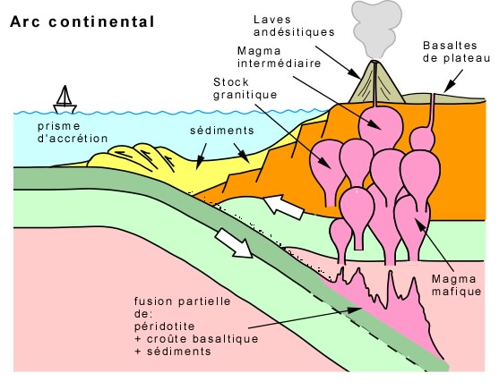
Un arc de subduction insulaire peut aussi contribuer à la formation de la croûte continentale
Dans un arc insulaire, une plaque océanique plonge sous une autre. Les fluides libérés par la plaque plongeante favorisent la fusion du manteau sus-jacent et la production de magmas d’arc. Une partie de ces magmas cristallise en profondeur en plutons ; les injections répétées peuvent différencier et épaissir la croûte de l’arc.
Au cours du temps, l’accrétion et le remaniement d’arcs insulaires peuvent contribuer à la croissance de la croûte continentale. Tous les arcs ne sont toutefois pas préservés : certains sont recyclés en subduction.
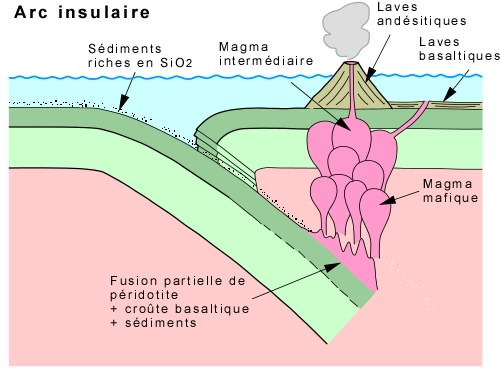
Cas particulier de la croûte continentale archéenne
Les TTG (tonalites, trondhjémites et granodiorites) forment une grande part des plutons archéens. Ces granitoïdes felsiques, généralement sodiques, proviennent largement de la fusion partielle de roches mafiques hydratées, favorisée par le régime thermique plus chaud de la Terre ancienne. Le contexte exact reste discuté : fusion d’une plaque océanique subduite, de croûte mafique épaissie ou de plateaux océaniques.
Différence avec les arcs actuels. Aujourd’hui, les fluides libérés par la plaque subduite favorisent surtout la fusion du manteau sus-jacent ; différenciation et remaniement contribuent ensuite à construire la croûte continentale. Les adakites, rares roches présentes notamment dans certaines zones des Andes, partagent des traits géochimiques avec les TTG sans en être des équivalents exacts.
Note importante — recyclage de la croûte océanique. La croûte se forme aux dorsales et est ensuite recyclée par subduction ; la durée d’un cycle de Wilson varie et n’est pas fixée à 200–300 Ma. Les grands bassins océaniques ouverts ne conservent généralement pas de plancher âgé de plus de 180–200 Ma, mais des fragments océaniques anciens ont été préservés sur les continents, notamment dans des ophiolites. À l’inverse, des plutons TTG archéens restent visibles dans les cratons du Canada et du Groenland.
Observer les échantillons de la collection
Pour chaque échantillon (gabbro, diorite, syénite, granite, granite porphyrique), notez :
- La texture globale de la roche, ainsi que la taille relative des grains et de leurs formes.
- En déduire la ou les différentes conditions de cristallisation (taux de sous-refroidissement en fonction de la nucléation et de la croissance).
- La couleur couleur globale de la roche, ainsi que les minéraux reconnaissables.
- En déduire la composition minéralogique et chimique de la roche, ainsi que son contexte géodynamique probable de mise en place.
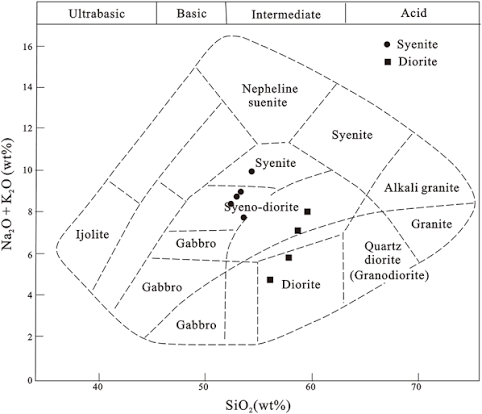
Messages à retenir
Une roche plutonique cristallise en profondeur ; sa texture et la taille de ses cristaux dépendent de son histoire thermique et de la cinétique de cristallisation.
L’assemblage et la composition des minéraux enregistrent, en partie, les conditions de cristallisation et l’évolution du magma.
La croûte océanique est principalement basaltique et gabbroïque ; des roches plus évoluées peuvent se former localement.
La croûte continentale est hétérogène et de composition moyenne intermédiaire. Elle comprend des granitoïdes fréquents dans sa partie supérieure, ainsi que des roches mafiques et métamorphiques en profondeur.
L’érosion et le soulèvement tectonique exposent des roches plutoniques en surface ; leur étude aide à reconstituer l’histoire de la croûte terrestre.